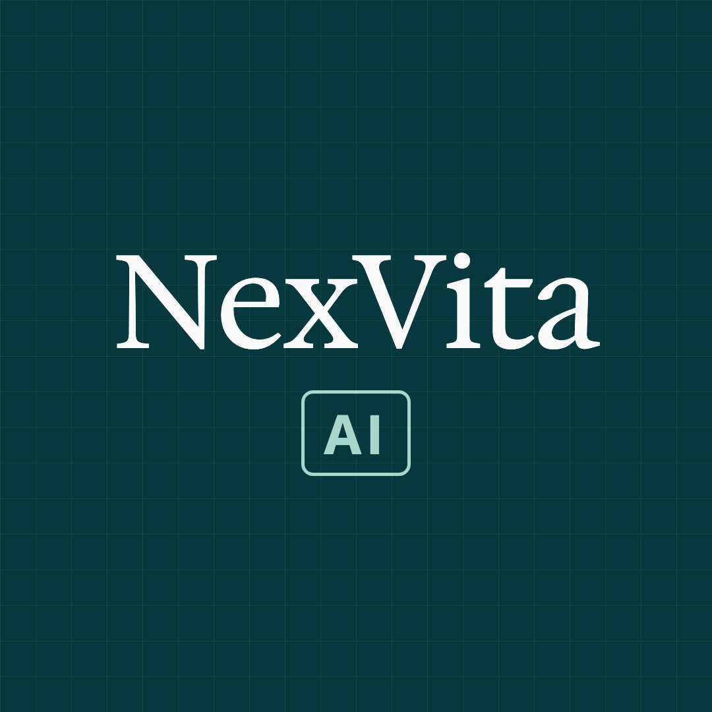
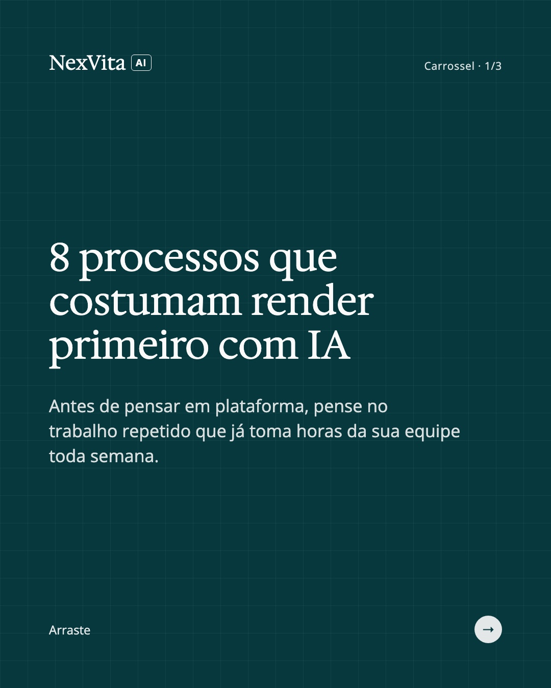
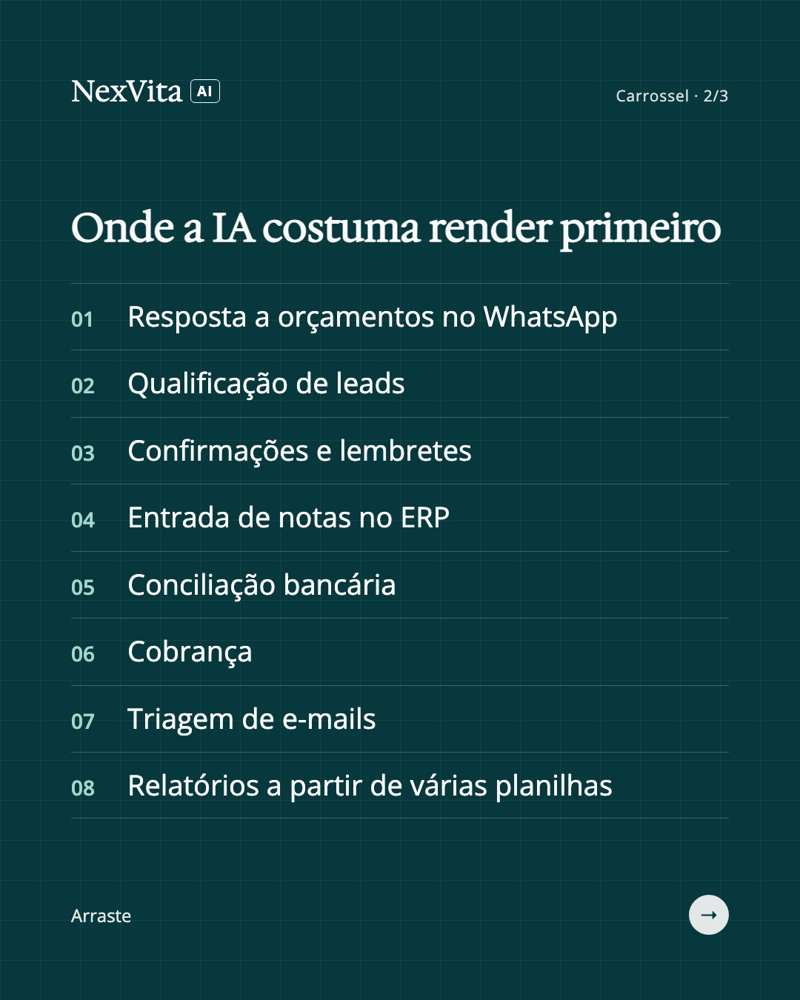
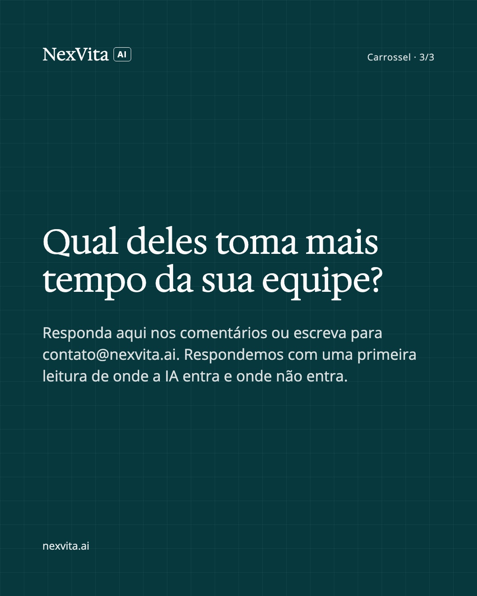
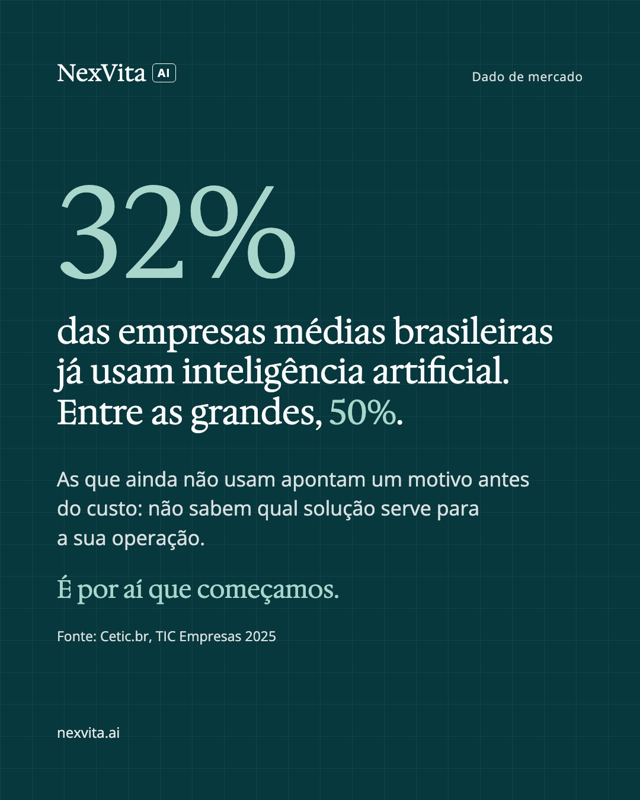
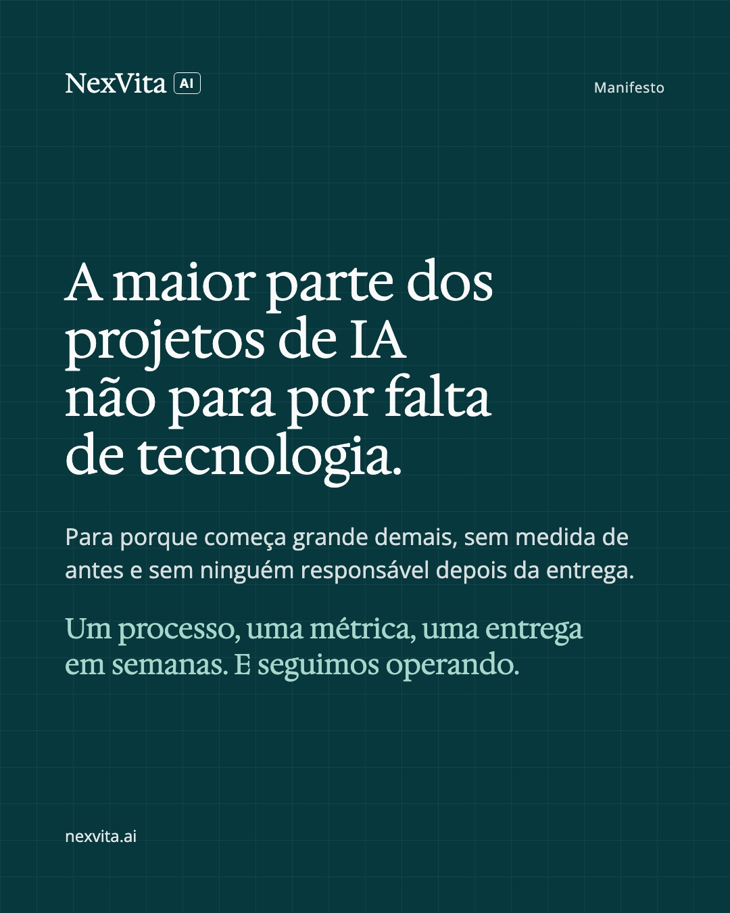

Posts da semana 1
Para cada post: segure o dedo na imagem → Salvar em Fotos. Depois toque em "Copiar legenda" e cole no Instagram.
Logo NexVita AI (LinkedIn)
Segure o dedo na imagem → Salvar em Fotos. Depois use como logo da página no LinkedIn.

Post 1 — carrossel (3 imagens)
No Instagram, escolha as 3 imagens nesta ordem: 1, 2, 3.



8 processos que costumam render primeiro com IA em empresas médias. Nenhum exige trocar de sistema: a IA entra no que a equipe já usa. Qual deles toma mais tempo aí? Responda nos comentários. nexvita.ai
Post 2 — dado de mercado

32% das empresas médias brasileiras já usam inteligência artificial. Entre as grandes, 50% (Cetic.br, TIC Empresas 2025). Entre as que ainda não usam, o motivo citado antes do custo é não saber qual solução serve para a própria operação. É por aí que começamos: um diagnóstico do processo, antes de qualquer ferramenta. nexvita.ai/diagnostico
Post 3 — manifesto (por último)

A maior parte dos projetos de IA não para por falta de tecnologia. Para porque começa grande demais, sem medida de antes e sem ninguém responsável depois da entrega. A NexVita AI trabalha ao contrário: um processo, uma métrica, uma entrega em semanas. E seguimos operando a solução depois de entregar. nexvita.ai